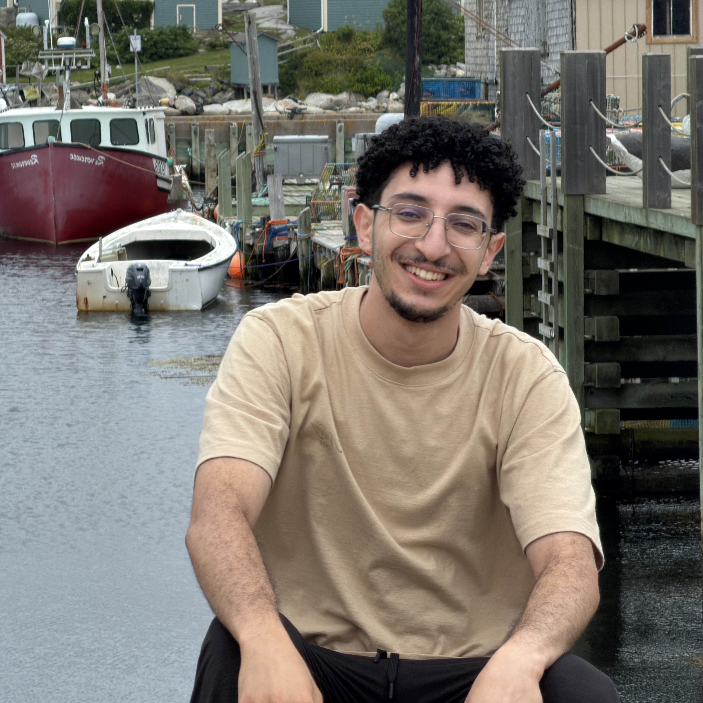

Analyse TI, développement logiciel et support technique.
Développement de scripts Power Query (M) reliant Omnissa Intelligence aux outils Microsoft et configuration de Power BI Service pour l'actualisation continue des données.
Conception de tableaux de bord DAX pour plus de 30 000 appareils : migration Windows 11, audits BIOS/UEFI et cycle de vie des flottes iOS et Android.
Structuration de l'inventaire dans Workspace ONE avec Smart Groups, orchestration des déploiements par vagues et automatisation PowerShell (remédiation WMIC).
Traduction des besoins de la Ville de Montréal et du SPVM en indicateurs décisionnels, avec documentation technique dans Jira.
Power BIPower QueryDAXWorkspace ONEPowerShell
Développement et intégration d'un CRM en Java, Spring Boot et MySQL connecté à des API internes.
Conception orientée objet et rédaction de documentation technique pour faciliter la maintenance.
Collaboration en mode Agile Kanban avec gestion des versions sous Git.
JavaSpring BootMySQLGitKanban
Diagnostic matériel et résolution de problèmes de connectivité réseau.
Analyse de données commerciales et création de tableaux de bord de suivi avec Power BI.
Support TIRéseauxPower BI
Ces expériences ont renforcé ma relation client, mon adaptation rapide et ma communication en français et en anglais dans un milieu professionnel.
Expérience
Portfolio d'Anir Hamdaoui

Anir HamdaouiPortfolio personnel
Windows XP Professionnel
Microsoft Windows xp
Installation des mises à jour...
Veuillez patienter pendant que Windows installe les mises à jour.